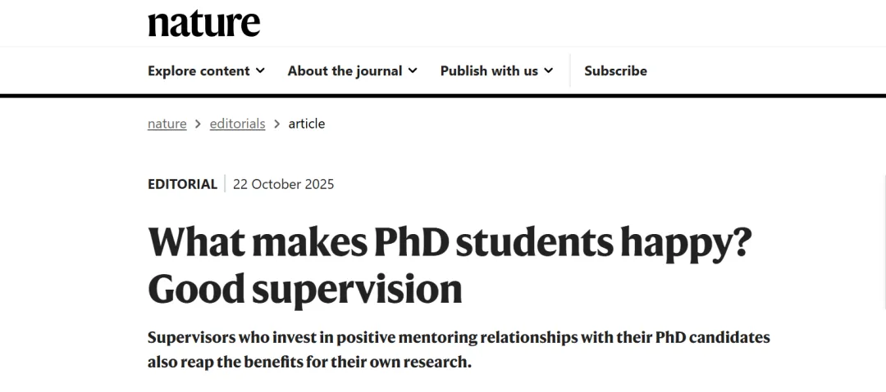
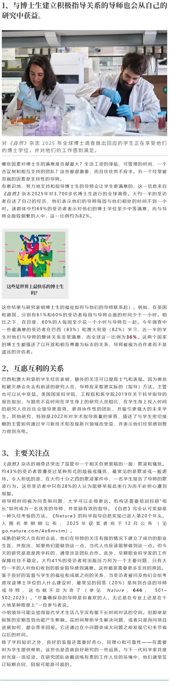

《Nature》：什么能让博士生快乐——好导师
原文：https://mp.weixin.qq.com/s?__biz=MzAwMzIzOTk5OQ==&mid=2247532350&idx=1&sn=22e74cfeb6f02fab41292184f1a666c8&chksm=9b3c066eac4b8f78be8e5dbdadd17c2f779ec80b223260794d2c7622035cd8fca60223151509#rd 合集：漫谈胡侃
一、写在前面
《Nature》在2025年对全球3,700多名博士生进行了调查，全球范围内对自己博士生涯与导师关系满意的PhD占比约36%，让博士生“Happy”的最大因素大家都猜得到——好导师。[1]

我们曾经也对大家的硕博生涯满意度进行过调查，这里我们也抛给大家一个新问题，你觉得你的硕博生涯导师：

二、原文译文
以下是《Nature》原文译文：

参考：
[1]https://www.nature.com/articles/d41586-025-03416-7

如何联系我们

 留一个领取资料、开箱即用的单细胞分析镜像的微信号[Biomamba_zhushou]，方便各位随时交流。同时我们也构建了交流群矩阵，欢迎大家入群讨论。
大家可以阅读完这几篇之后添加给生信入门初学者的小贴士
没有检索，就没有发言权
留一个领取资料、开箱即用的单细胞分析镜像的微信号[Biomamba_zhushou]，方便各位随时交流。同时我们也构建了交流群矩阵，欢迎大家入群讨论。
大家可以阅读完这几篇之后添加给生信入门初学者的小贴士
没有检索，就没有发言权
已有生信基地联系方式的同学无需重复添加

 您点的每个赞和在看，我都认真当成了喜欢
您点的每个赞和在看，我都认真当成了喜欢